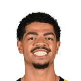

Dustin Dopirak:TJ McConnell:
“We showed the league what we're capable of. Obviously, we hit a rough patch when Tyrese goes down. When you lose someone like that, it's gonna be tough to win games.”

8 quotes from TJ McConnell about 8 other people around the NBA, newest first. Each one links to its original source.
Dustin Dopirak:TJ McConnell:
“We showed the league what we're capable of. Obviously, we hit a rough patch when Tyrese goes down. When you lose someone like that, it's gonna be tough to win games.”
“I know a lot of people around here are sad because Jerami was like the favorite guy in the locker room. Everyone loved him.”
“Markelle is a special player and he deserves to be out there. I just have to continue to stay ready and be a professional to the best of my abilities.”
What NBA players and coaches have said about TJ McConnell →

Ben Sheppard1 quote“But it’s hard to look past the minutes and the growth that some of the guys that, even last year, didn’t get. Especially Drew taking on a bigger role, Ben Sheppard, the young guys continuing to come in and give us a spark and get valuable minutes in the NBA. That’s a really valuable thing. It’s something we can’t look past. We’ve got to continue to honor it, and continue to build guys up when they get those opportunities.”
Dustin Dopirak:TJ McConnell:
“We showed the league what we're capable of. Obviously, we hit a rough patch when Tyrese goes down. When you lose someone like that, it's gonna be tough to win games.”
Scott Agness:T.J. McConnell on Caris LeVert:
“He’s an amazing teammate, fits amazing into this locker room. “He’s opened up the floor for all of us and when we need a timely bucket and a big bucket, he goes out and gets it for us.”
“Markelle is a special player and he deserves to be out there. I just have to continue to stay ready and be a professional to the best of my abilities.”
Fred Katz:TJ McConnell on Westbrook:
“He averages a triple-double for Christ's sake, so it's tough for us to stop him.”
Jessica Camerato:McConnell on Batum win guarantee:
“I’m not taking shots at anyone by any means, but it’s disrespectful towards our team.”
“I know a lot of people around here are sad because Jerami was like the favorite guy in the locker room. Everyone loved him.”
#Sixers PGTJ McConnell on Ben Simmons:
“He's literally the nicest kid I ever met. He's going to fit in here. He works hard. For being the No. 1 pick, he's the most humble kid I've seen.”